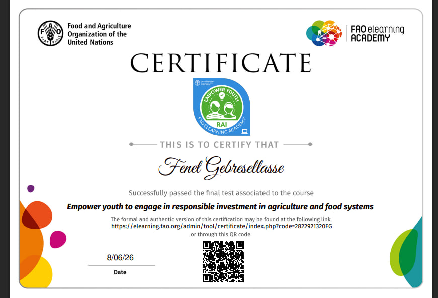
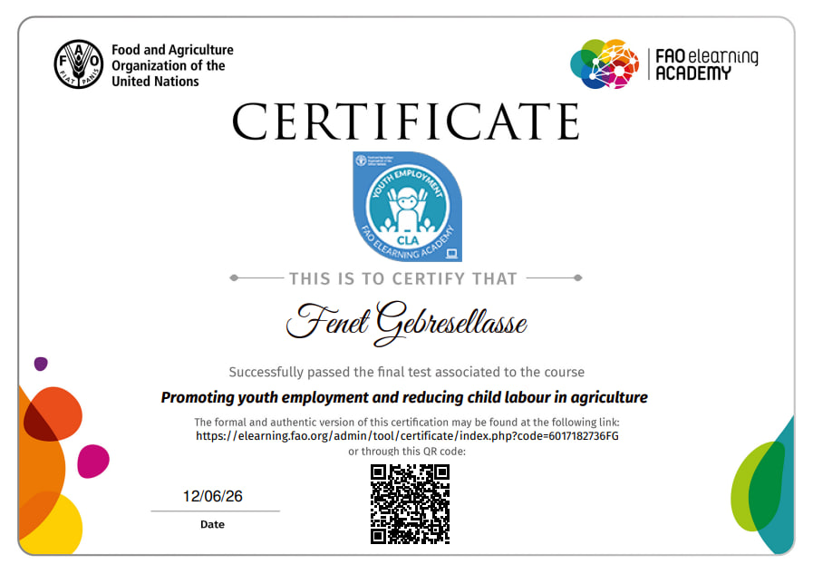
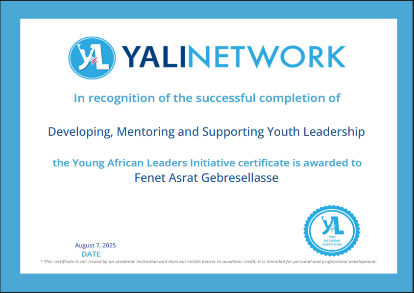

CERTIFICATIONS
Professional Development
Certifications and learning experiences that have helped me develop new skills, broaden my knowledge, and continue growing personally and professionally.

FAO Certificate

FAO Certificate

YALI Network Certificate
VOLUNTEERING
Community & Volunteer Experience
Beyond Dancers
Volunteered with Beyond Dancers, helping coordinate students and organize the order of performers during performances.
EXPERIENCE
Additional Experience
Ethiopian Women's Academy
Gained experience managing social media and supporting digital communication activities.
CONTINUOUS GROWTH
Always Learning
I continue to look for opportunities to learn new skills, gain practical experience, contribute to meaningful activities, and develop myself both personally and professionally.